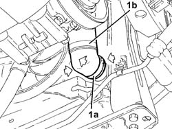
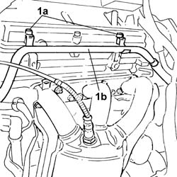
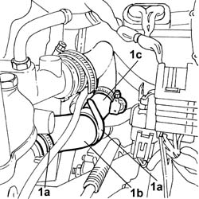

1088D65 Flexible HOSE between thermostat and alternator coolant rigid return pipe - R.R.
- Path
- Procedures > 10 ENGINE > 1088 ENGINE COOLING > 1088D COOLANT HOSES AND PIPES > 1088D65 Flexible HOSE between thermostat and alternator coolant rigid return pipe - R.R.
- Kind
- repair procedure (removal / refitting; the operation number is the code)
- Applies to
- engines: 3.0 V6, 3.2 V6; all production periods
- Interactive page
- https://sloeber94.github.io/elrnDB-lThss/en/#/192741
Applies to: engines: 3.0 V6, 3.2 V6; all production periods
 Removing
Removing
 Refitting
Refitting- Position the vehicle on a lift.
- Open the boot, remove the cover on the left hand side and disconnect the negative battery lead.
- Raise the vehicle.
- Position a container to collect the radiator coolant.
1. Open the rapid attachment band (1a) and disconnect the lower pipe (1b) from the radiator (1c).

Applies to: engines: 3.0 V6, 3.2 V6; all production periods
- Lower the vehicle.
See in Op. 7040D50 ENGINE COMPARTMENT UPPER SOUND INSULATION SHIELD - R.R.
See in Op. 1048A28 vacuum air circuit resonator pipe - r+r
See in Op. 1048A35 HOSE FROM FLOW METER TO RESONATOR - R.R.
See in Op. 1048A11 COMPLETE AIR FILTER -R.R.
See in Op. 1056B82 Injection/ignition system CONTROL UNIT (one) - R.R.
1. Working as far as possible at the rear of the engine, loosen the bolts (1a) fixing the rigid alternator coolant return pipe (1b) to the cylinder head in order to allow more clearance.

Applies to: engines: 3.0 V6, 3.2 V6; all production periods
1. Open the bands (1a) fastening the hose (1b) to the rigid pipe (1c) and to the thermostat, then remove the hose.

Applies to: engines: 3.0 V6, 3.2 V6; all production periods
Refitting
Removing- Position the hose and close the retaining bands.
- Tighten the bolts fixing the rigid alternator coolant return pipe to the cylinder head.
See in Op. 1056B82 Injection/ignition system CONTROL UNIT (one) - R.R.
See in Op. 1048A11 COMPLETE AIR FILTER -R.R.
See in Op. 1048A35 HOSE FROM FLOW METER TO RESONATOR - R.R.
See in Op. 1048A28 vacuum air circuit resonator pipe - r+r
See in Op. 7040D50 ENGINE COMPARTMENT UPPER SOUND INSULATION SHIELD - R.R.
- Raise the vehicle.
- Connect the rapid attachment band for the lower radiator pipe.
- Lower the vehicle.
- Connect the negative battery lead, then close the boot.
- Remove the vehicle from the lift.
See in Op. 0010T21 ENGINE COOLANT - Check density and top up if necessary
- [0010T21]
Topics linked from this page (6)
- 0010T21 ENGINE COOLANT - Check density and top up if necessary
- 1048A11 COMPLETE AIR FILTER -R.R.
- 1048A28 vacuum air circuit resonator pipe - r+r
- 1048A35 HOSE FROM FLOW METER TO RESONATOR - R.R.
- 1056B82 Injection/ignition system CONTROL UNIT (one) - R.R.
- 7040D50 ENGINE COMPARTMENT UPPER SOUND INSULATION SHIELD - R.R.